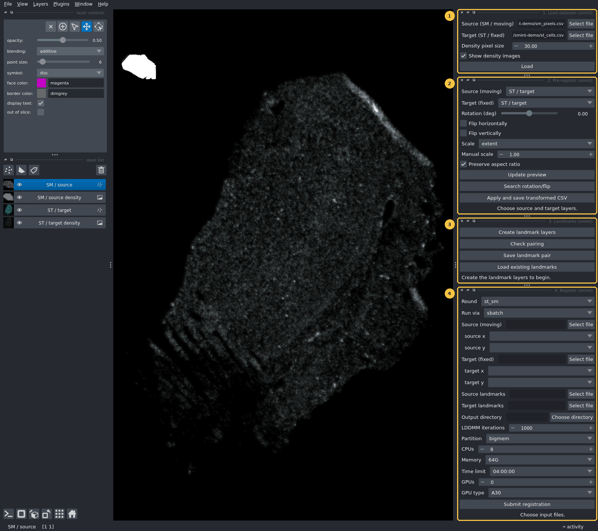
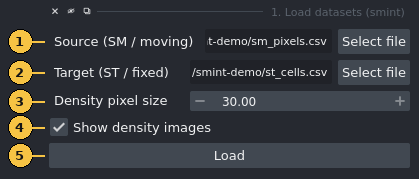
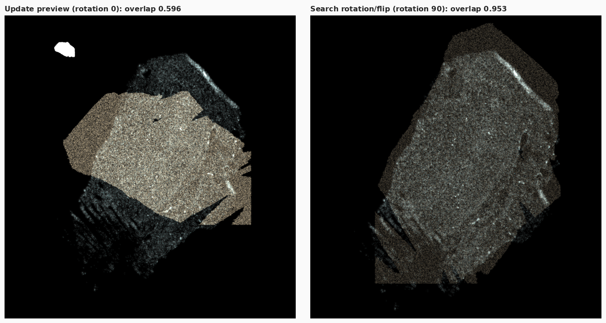
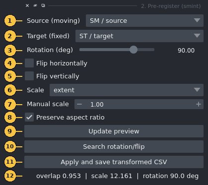
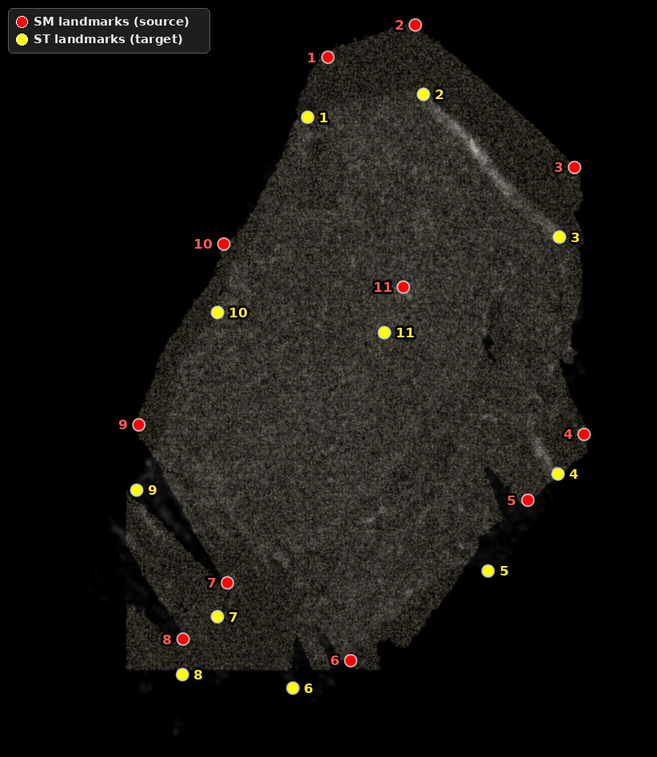
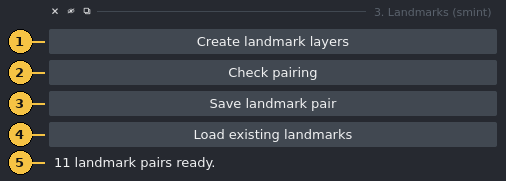
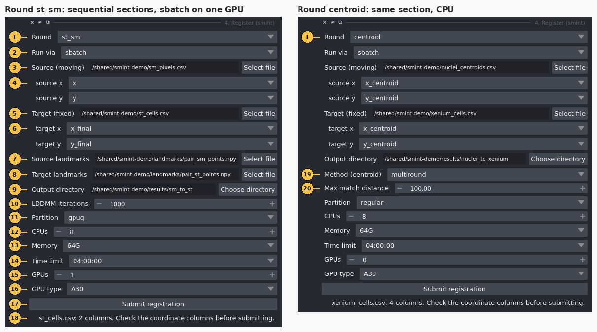

napari plugin¶
The SMINT napari plugin covers the hands-on part of registration. You load two datasets, line them up roughly by eye, place matching landmarks, and send the registration to a SLURM job or a local worker without leaving the viewer. The plugin has four dock widgets, numbered in the order you use them. This page goes through each one: every control, what it writes to disk, and the mistakes that most often cost an afternoon.

| Widget | Use it to | Writes |
|---|---|---|
| 1. Load datasets | Show a source and a target table as Points layers, with optional density images | nothing |
| 2. Pre-register | Coarsely scale, rotate and flip the source onto the target | <name>.csv + <name>.pretransform.json |
| 3. Landmarks | Place, check and save paired landmarks | <prefix>_sm_points.npy, <prefix>_st_points.npy |
| 4. Register | Submit the registration and load the result back | a job directory with job_spec.json, status.json, logs and the transformed CSV |
Which widgets you need
Sequential sections (for example Xenium and MALDI on neighbouring sections) use all
four widgets and the st_sm round, which runs STalign LDDMM from your landmarks.
The same section (post-Xenium staining segmented into nuclei) needs only widgets 1 and 4,
with the centroid round. That round matches centroids itself, so you place no landmarks.
For help choosing, see Choosing a registration method.
Install and launch¶
You need two Python environments. They cannot be merged.
- The napari environment runs the viewer and the widgets. napari works with numpy 2.
- The worker environment runs the registration. The
st_smround needs STalign, and STalign needs numpy < 2. This environment must also have SMINT installed, because the worker importssmintand does not inherit yourPYTHONPATH(see How it fits together).
python -m venv napari-env
napari-env/bin/pip install "napari[pyqt5]"
# SMINT's own dependencies include Cellpose and torch, which the plugin does not use:
napari-env/bin/pip install --no-deps -e /path/to/SMINT
napari already brings numpy, pandas, scipy and magicgui, which are all the plugin imports.
Set up the STalign environment described in Installation, install SMINT into it, and tell the plugin where its interpreter is. Set the variable before you start napari, because the plugin reads it when you click Submit:
If SMINT_WORKER_PYTHON is not set, SMINT looks for STalign_env/bin/python in the
directory that holds your SMINT checkout. If it finds nothing there, it falls back to the
interpreter napari itself is running in. That fallback is fine for the centroid round
but fails for st_sm.
Open the widgets from Plugins → SMINT Registration. You can also dock all four from a script, which is how the screenshots on this page were made:
import napari
viewer = napari.Viewer()
for name in ("1. Load datasets", "2. Pre-register", "3. Landmarks", "4. Register"):
viewer.window.add_plugin_dock_widget("smint", name)
napari.run()
How it fits together¶
The plugin never imports STalign. The Register widget writes a job spec to disk and
starts a separate worker interpreter. The worker runs the registration and reports back
through a status.json file, which the widget checks every 10 seconds.
flowchart LR
subgraph NP["napari process (numpy 2, no STalign)"]
direction TB
W1["1. Load datasets"] --> W2["2. Pre-register"]
W2 --> W3["3. Landmarks"]
W3 --> W4["4. Register"]
end
W2 -- "Apply and save" --> PRE[("pre-registered CSV<br/>+ .pretransform.json")]
W3 -- "Save landmark pair" --> LM[("prefix_sm_points.npy<br/>prefix_st_points.npy")]
W4 -- "Submit" --> SPEC[("output_dir/job_spec.json")]
SPEC --> RUN{"Run via"}
RUN -- "sbatch" --> SB["submit.sh<br/>SLURM job"]
RUN -- "local" --> LO["detached<br/>subprocess"]
SB --> WK["worker interpreter<br/>python -m smint.cli.register job_spec.json<br/>(STalign env, numpy below 2)"]
LO --> WK
WK --> ST[("status.json<br/>+ transformed CSV")]
ST -. "polled every 10 s" .-> W4
W4 -. "adds the registered layer" .-> NPThere are three reasons for the split. napari and STalign need different numpy major versions, so they cannot share a process. A multi-minute LDDMM run in the background leaves the viewer responsive. And if a registration crashes, napari keeps running.
The batch and local paths differ only in how the worker starts. On both paths SMINT removes
PYTHONPATH, PYTHONHOME, PYTHONSTARTUP and LD_PRELOAD from the worker's environment, so
packages from the napari environment cannot get into the worker.
Everything a run produces lands in the Output directory you choose in widget 4:
| File | When | Contents |
|---|---|---|
job_spec.json |
always | Round, inputs, parameters, SLURM resources and the worker interpreter. You can re-run it (see below). |
status.json |
always | state (submitted → queued or running → completed / failed), a message, and on success outputs and metrics |
submit.sh |
sbatch | The generated batch script |
smint_<round>_<jobid>.out / .err |
sbatch | Worker stdout and stderr |
worker.log |
local | Worker stdout and stderr |
sm_transformed.csv |
st_sm round |
The SM table with x_transformed / y_transformed appended |
centroids_transformed.csv |
centroid round |
The source table with transformed (and refined) coordinates appended |
1. Load datasets¶

| # | Control | What it does |
|---|---|---|
| 1 | Source (SM / moving) | The CSV that will be moved, such as the MALDI pixel table or segmented nuclei |
| 2 | Target (ST / fixed) | The CSV that stays put, such as the Xenium cells |
| 3 | Density pixel size | Bin size of the density images in coordinate units, 1–500 (default 30). One value is used for both datasets. |
| 4 | Show density images | Also adds a smoothed 2D histogram of each dataset (Gaussian sigma of 1 bin, grey, additive, 60 % opacity) |
| 5 | Load | Reads both files and adds the layers below, then resets the view |
Clicking Load adds up to four layers:
ST / target density and SM / source density (images), then ST / target (cyan points) and
SM / source (magenta points).
Coordinate columns are detected automatically. The widget uses the first match in this
list, ignoring case: x_final, x_centroid, centroid_x, x_transformed, x, X (and the
y equivalents). Only those two columns are read. A 450 MB metabolomics matrix with hundreds
of m/z columns therefore loads in seconds.
Display is capped at 200,000 points per dataset. Larger tables are randomly subsampled (fixed seed) for display only. The worker always reads every row.
Make the data visible
Points are drawn 6 coordinate units wide. On a whole section in µm that is smaller than a screen pixel, so the density images are what you actually see when zoomed out. To see the points, zoom in or raise point size in napari's layer controls. In the screenshots on this page, the point and landmark sizes were raised this way.
Different units in the two files
The density pixel size applies to both datasets. If the source is still in raw instrument pixels while the target is in µm, as in the overview above, the source density image comes out as a coarse blob. That is expected, and widget 2 fixes the scale.
2. Pre-register¶
Spatial metabolomics data usually arrives on its own pixel grid, and is often rotated or mirrored relative to the Xenium section. LDDMM cannot recover from a large orientation error, so first bring the source roughly onto the target.

Pre-registered preview layer over the Sample 2 Xenium section.
Left: scale fitted, no rotation (overlap 0.596). Right: after Search rotation/flip
(90°, scale 12.161, overlap 0.953). The leftover mismatch at the tissue edges is what the
landmarks and LDDMM correct.
| # | Control | What it does |
|---|---|---|
| 1 | Source (moving) | Any Points layer in the viewer. The list updates whenever layers are added or removed. |
| 2 | Target (fixed) | The Points layer to align to |
| 3 | Rotation (deg) | −180 to 180, counter-clockwise, about the source centroid |
| 4 | Flip horizontally | Mirror the source left–right |
| 5 | Flip vertically | Mirror the source top–bottom |
| 6 | Scale | extent matches the bounding-box span on each axis (default, robust to different origins). max matches the maximum coordinates, which only works when both datasets start near zero. none keeps the source scale. manual uses control 7. |
| 7 | Manual scale | An isotropic factor, used only when Scale is manual |
| 8 | Preserve aspect ratio | With extent / max, use one isotropic factor (the smaller of the two axis factors), so the tissue is not stretched |
| 9 | Update preview | Recompute the preview. Changing controls 3–8 also does this automatically. |
| 10 | Search rotation/flip | Try every 15° from −180° to 165° under all four flip combinations (96 candidates), keep the one with the highest overlap, and set controls 3–5 to match |
| 11 | Apply and save transformed CSV | Ask for the original source CSV and an output path, transform the coordinate columns of every row, and save |
| 12 | Status | The overlap score, fitted scale and rotation, plus reflected if the transform mirrors the data |
The transform applies the flip first, then the rotation, then the scale, all about the source centroid. A final translation then puts the source centroid on the target centroid. Scale is fitted after orientation, because bounding-box extents change when the data rotates.
The overlap score is the fraction of occupied 50-unit target bins that the source also occupies, from 0 to 1, where higher is better. It needs no correspondences, so it is cheap enough to recompute every time you move the slider.
Apply and save writes two files: the transformed table, and a JSON file beside it with the
same stem (for example sm_prereg.csv and sm_prereg.pretransform.json). The JSON records the
3×3 matrix, its decomposition (scale, rotation, reflection), and the slider and checkbox
settings, so you can reproduce the coarse step later.
Pitfalls
- Pick the same file you loaded when Apply asks for the original source CSV. The matrix was fitted to the loaded layer and is applied to whatever file you choose.
- The preview layer is itself a Points layer, so it appears in the Source and Target lists. Do not select it as the source.
- The matrix is fitted on the displayed points. For tables above 200,000 rows those points are a random subsample, so extents and centroid can differ very slightly from the full table.
- A few stray points stretch the bounding box and shrink the fitted scale. Remove debris
first, or switch to
manual.
3. Landmarks¶

SM landmarks. Yellow: ST landmarks.
Pair n in one layer corresponds to pair n in the other. The consistent offset
between partners is the misalignment left after pre-registration.
| # | Control | What it does |
|---|---|---|
| 1 | Create landmark layers | Add ST landmarks (yellow) and SM landmarks (red) Points layers, or reuse them if they already exist. It then selects SM landmarks in add mode, so your next click places a point. |
| 2 | Check pairing | Report whether the pair is ready (see the messages below) |
| 3 | Save landmark pair | Ask for an output prefix and write <prefix>_sm_points.npy and <prefix>_st_points.npy |
| 4 | Load existing landmarks | Ask for an SM and an ST .npy file and replace the contents of both landmark layers |
| 5 | Status | Feedback from the buttons |
Placing landmarks. You place landmarks with napari's own Points tools, directly on the
data and in the data's coordinates, so no raster and no pixel-to-µm conversion is involved.
Click a feature in SM landmarks, select ST landmarks in the layer list, switch it to add
mode (the ⊕ button in the layer controls), and click the same feature there. Repeat, keeping
the order the same in both layers.
Order is the correspondence
SMINT pairs landmarks by position in the list: point 1 with point 1, point 2 with point 2. If you skip or delete a point in one layer only, every later pair shifts by one. There is no error message. You just get a wrong registration.
Check pairing reports one of:
No landmarks placed yet.Counts differ: 5 source vs 4 target. Each landmark needs a partner, in the same order.Need at least 3 pairs for an affine, have 2.11 landmark pairs ready.
Save landmark pair refuses to save until the check passes. The files use the same format as
STalign's point_annotator.py: a pickled {"1": [(x, y)], "2": [(x, y)], ...} dict in click
order. That means landmark files from the plugin and from the annotator work interchangeably.
Tips
- Landmark markers are 14 coordinate units wide. On a section in µm, raise point size in the layer controls (the figure above uses 220) so you can see them.
- Use features both modalities show clearly: tissue corners, the ends of folds or tears, and the edges of large structures. Spread them over the whole section rather than clustering them.
- Landmarks are in the coordinates of the layer you click on. If you click on the
Pre-registered preview, your SM landmarks are in the pre-registered frame, so the file you register in widget 4 must be the CSV written by Apply and save, not the original.
4. Register¶

st_sm; method and
match distance only for centroid.| # | Control | What it does |
|---|---|---|
| 1 | Round | st_sm: STalign LDDMM for sequential sections, initialised from landmarks. centroid: correspondence fitting for the same section. |
| 2 | Run via | sbatch submits a SLURM job. local starts a detached subprocess on the machine running napari. |
| 3 | Source (moving) | Source CSV. Choosing a file fills controls 4 from its header. |
| 4 | source x / source y | Which source columns to register. The widget guesses from the list in widget 1. Check the guess. |
| 5 | Target (fixed) | Target CSV |
| 6 | target x / target y | Which target columns to register. Same guess and same caution as 4. |
| 7 | Source landmarks | <prefix>_sm_points.npy (st_sm only) |
| 8 | Target landmarks | <prefix>_st_points.npy (st_sm only) |
| 9 | Output directory | Where the job spec, status, logs and results go. For sbatch it must be on shared storage. |
| 10 | LDDMM iterations | 1–20,000 (default 1000; st_sm only) |
| 11 | Partition | The partitions sinfo reports on your cluster, so a typo cannot reach sbatch. The first one in the list is preselected, so check it. |
| 12 | CPUs | 1–64 (default 8) |
| 13 | Memory | 16G, 32G, 64G (default), 128G or 256G |
| 14 | Time limit | 00:30:00, 02:00:00, 04:00:00 (default), 12:00:00 or 1-00:00:00 |
| 15 | GPUs | 0–4 (default 0) |
| 16 | GPU type | any plus the GPU types sinfo reports for the selected partition. Defaults to A30, the card registration is validated on, if that partition has one. |
| 17 | Submit registration | Validate, write the job, submit it and start watching it |
| 18 | Status | Column counts after you choose a file, then the job ID or PID after you submit |
| 19 | Method (centroid) | multiround (default), affine, ransac, tps or ransac+tps |
| 20 | Max match distance | Largest distance at which two centroids can be matched, in coordinate units (default 100) |
Pick the coordinate columns explicitly
ST tables often carry several coordinate pairs from successive processing steps (here
x_centroid beside x_new). The wrong pair gives a wrong registration without any error.
The guess only follows the priority list, so always check controls 4 and 6.
What happens when you click Submit¶
- Checks in the widget. You get an error notification if the source, target or output
directory is missing, or if the
st_smround has no landmark pair. - Validation of the job spec. Every input file must exist. The partition must be one
sinfolists, and the GPU type must be one that partition offers. Forsbatch, no path may be node-local (/tmp,/var/tmp,/dev/shm,/run). Any failure appears as a notification and in the status line, and nothing is submitted. - Submission. SMINT writes
job_spec.jsonandstatus.json. Withsbatch, it also writes and submitssubmit.sh(job namesmint_st_smorsmint_centroid) and records the job ID. Withlocal, it starts the worker and records the PID. - Watching. A background thread reads
status.jsonevery 10 seconds and asks SLURM about the job. A job that SLURM kills for running out of memory or time is therefore reported as failed, instead of staying "running" forever. - Result. On success, the transformed CSV is added as a lime Points layer named
st_sm registeredorcentroid registered. Thecentroidround also showsDone. matched=… TRE <before> -> <after> (held-out). A failure shows the worker's error message.
Batch jobs need shared storage
An sbatch job runs on a different machine, so it cannot see node-local paths such as /tmp
on the node where you run napari. SMINT rejects them before submitting. Without that check,
the job would die with no logs at all, because its log directory would not exist on the
compute node. Put inputs and the output directory on a shared file system.
GPU or CPU¶
To run LDDMM on a GPU, choose a GPU partition, set GPUs to 1 and leave GPU type at
A30 (or choose another card). LDDMM uses CUDA when the job has a GPU and the CPU otherwise.
For the Sample 2 sequential example (11 landmarks, 459,969 SM pixels, 53,622 ST cells), the
registration took about 72 s on one A30.
Choose the GPU type deliberately. any requests --gres=gpu:1, which takes whichever card is
free. On a partition with mixed hardware, that can be a card several generations older than
the one you timed. Two combinations are allowed but only produce a warning in the job's
log: GPUs on a partition that does not look like a GPU partition (the job sits in the queue),
and a GPU partition with GPUs at 0 (no GPU is allocated, so the job runs on the CPU).
Known limitations of the st_sm round from the widget
Two behaviours of the current code affect st_sm jobs submitted from this widget. Until
they are fixed, submit sequential registrations with the Python snippet below.
- SM coordinates are rescaled in the worker. The worker reads the SM table with the
defaults of
read_sm_matrix, which multiplyx/yby 10 (MALDI pixels to µm) and shift the data to non-negative coordinates. The widget does not change these defaults. Landmarks you place on the displayed coordinates are therefore in a different frame from the one the worker registers. Landmark files made withprepare_landmark_inputsandpoint_annotator.pyalready use the scaled frame and are not affected. We tested this on the Sample 2 example shown on this page, with pre-registered SM and landmarks placed in that frame. With the widget's defaults, the transformed SM pixels ended up tens of millimetres from the tissue. With the snippet below, the median distance to the nearest ST cell was 16.4 µm. - The output is transposed by default.
x_transformed/y_transformedare written withorientation="dataset". Those coordinates are transposed relative to the ST cells (see Coordinate frames), so thest_sm registeredlayer does not overlay the target.
Rerun or adjust a job outside the widget¶
A job spec is plain data, so you can build one in Python with any parameter the worker accepts.
You can also re-run an existing job_spec.json from a shell in the worker environment.
from smint.alignment.jobs import JobSpec, SlurmResources, poll, submit
spec = JobSpec(
round="st_sm",
inputs={
"st_file": "st_cells.csv",
"sm_file": "sm_prereg.csv", # written by "Apply and save"
"st_points": "landmarks/pair_st_points.npy",
"sm_points": "landmarks/pair_sm_points.npy",
},
params={
"niter": 1000,
"st_x_col": "x_final",
"st_y_col": "y_final",
# landmarks were placed on this CSV's own coordinates: read them unchanged
"sm_kwargs": {"scale_xy": 1.0, "keep_positive": False},
# write x/y_transformed as true xy in the ST frame
"orientation": "stalign",
},
output_dir="results/sm_to_st",
backend="sbatch",
resources=SlurmResources(partition="gpuq", gpus=1, gpu_type="A30"),
)
print(submit(spec)) # {'backend': 'sbatch', 'job_id': ..., ...}
print(poll(spec.output_dir)["state"]) # queued -> running -> completed
Run this from a directory on shared storage, in any environment that has SMINT. Set
SMINT_WORKER_PYTHON as above, or pass worker_python= to JobSpec.
# In the worker environment: run an existing spec here, without SLURM
smint-register results/sm_to_st/job_spec.json
# equivalent:
python -m smint.cli.register results/sm_to_st/job_spec.json
The worker updates status.json in the spec's output directory as it goes. To change a
parameter, edit params in job_spec.json first.
See the Jobs API reference for every field of JobSpec and
SlurmResources.
Troubleshooting¶
- SMINT Registration does not appear in the Plugins menu
-
Install SMINT into the environment napari runs from (
pip install --no-deps -e /path/to/SMINT), then restart napari. To check that napari can find the plugin:python -c "import npe2; pm = npe2.PluginManager.instance(); pm.discover(); print(pm.get_manifest('smint').display_name)"The command should print
SMINT Registration. Partition 'x' does not exist on this cluster. Available: …- The partition was checked against
sinfobefore submission. Choose one from the list. GPU type 'A30' is not offered by partition 'x'. Available: …- Choose a GPU partition, or set GPU type to
any. sbatch jobs run on a different machine, so node-local paths are unreachable- An input or the output directory is under
/tmp,/var/tmp,/dev/shmor/run. Move it to shared storage, or use Run vialocal. sbatch not found on PATH- napari is running on a machine without SLURM. Use
local, or start napari on a cluster node. Registration failed: STalign is not importable in this interpreter- The worker ran in the napari environment. Set
SMINT_WORKER_PYTHONto the STalign environment's interpreter before launching napari. - The worker cannot import
smint - The worker does not inherit
PYTHONPATH, so SMINT must be installed in the worker environment itself. SLURM reported OUT_OF_MEMORY/TIMEOUT- Raise Memory or Time limit and submit again.
SLURM completed but the worker did not report success; check the .err log- The job ended without writing a final status. The traceback is in
smint_<round>_<jobid>.errin the output directory. - The status stays at "queued"
- The job is waiting for resources. Check with
squeue --me. GPU requests on a busy partition can wait a while. - Widget fails with
missing 1 required positional argument: 'viewer' - napari passes the viewer only to
QWidgetor magicguiWidgetsubclasses and tomagic_factorywidgets. A plain function contribution is called with no arguments. Widgets that need the viewer must be classes. stalign_available()isFalsein the napari environment- This is expected, because the napari environment has numpy 2. Only the worker environment
needs STalign. Pre-registration and the
centroidround work in either environment.
How the screenshots were made
The figures were captured from the running plugin, not mocked up.
capture_screenshots.py registers the
plugin manifest with npe2, docks the four widgets with add_plugin_dock_widget, presses
their buttons, and saves viewer.screenshot() and QWidget.grab() images under a virtual X
server. annotate_screenshots.py crops the
images and adds the numbered callouts at widget positions recorded during capture.
The data are de-identified coordinates from Sample 2. The landmark pairs were set from the
saved landmark files instead of being clicked, and the file paths displayed in the fields
were replaced with neutral ones under /shared/smint-demo.
xvfb-run -s "-screen 0 1920x1200x24" \
python docs/assets/napari/src/capture_screenshots.py \
--source sm_pixels.csv --target st_cells.csv \
--source-landmarks pair_sm_points.npy --target-landmarks pair_st_points.npy \
--centroid-source nuclei_centroids.csv --centroid-target xenium_cells.csv \
--out raw
python docs/assets/napari/src/annotate_screenshots.py raw docs/assets/napari
Next steps¶
- Sequential-section registration tutorial: the
same
st_smworkflow in code, from raw tables to the registered overlay. - Same-section registration tutorial: the
centroidround with multiround matching and snapping refinement. - Running on HPC: partitions, GPUs and shared storage for batch jobs.
- Coordinate frames:
datasetversusstalignorientation and why it matters for overlays.